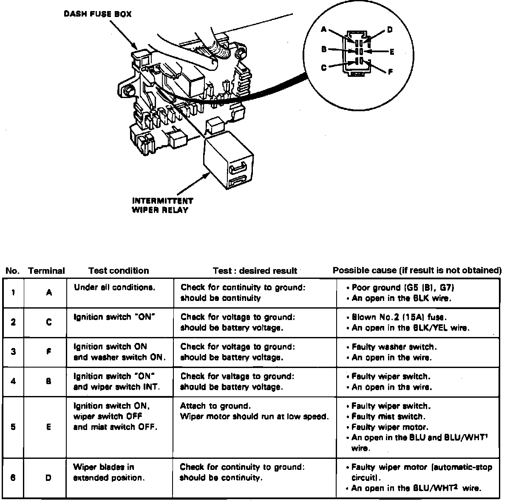

Wiper Control Module: Testing and Inspection
Fig. 6 Intermittent Wiper Relay:

1. Remove intermittent wiper relay from dash fuse box.
2. Check for continuity between terminal A, Fig. 6, and ground, continuity should exist, if not poor ground or open in black wire is indicated.
3. Turn ignition switch On, check terminal C for voltage to ground, battery voltage should be indicated, if not blown No. 2 fuse or an open in black.yellow wire is indicated.
4. With ignition switch and washer switch On, check terminal F for voltage to ground, battery voltage should be indicated, if not faulty washer switch or an open wire is indicated.
5. With ignition switch On and washer switch at INT, check terminal B for voltage to ground, battery voltage should be indicated, if not faulty wiper switch or an open wire is indicated.
6. With ignition switch On, wiper switch Off and mist switch Off, connect terminal E to ground, ensure wiper motor runs at low speed, if not faulty wiper switch, mist switch, wiper motor or an open in blue and blue/white wire is indicated.
7. With wiper blades in extended position, check terminal D to ground for continuity, continuity should be indicated, if not, faulty wiper motor or an open in blue/white wire is indicated.
8. If all tests are ok, yet system fails, replace control unit.